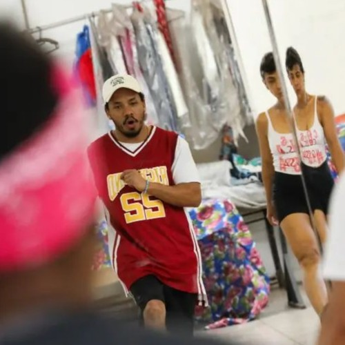

Oficina de Dança
Com
Professor Javan
Javan é um talentoso dançarino de hip-hop e educador, que tem dedicado sua vida à promoção da cultura
urbana e à formação de novos talentos na dança. Com uma trajetória profissional que começou em 2015, ele
se destaca como professor de Breaking e pesquisador da cultura Hip-Hop, integrando sua paixão pela dança
com o ensino e a educação.
Atualmente, Javan leciona na Escola Municipal Paulo Mendes Campos CEI, em Belo Horizonte, onde atua há
sete anos. Sua experiência inclui trabalho em diversas escolas públicas e projetos sociais na cidade,
permitindo que ele impacte positivamente a vida de muitas crianças e adolescentes. Ele é um defensor do
poder transformador da dança, acreditando que ela pode ser uma ferramenta de inclusão social e
desenvolvimento pessoal.
Além de seu trabalho como educador, Javan é líder do Coletivo de Danças Urbanas New Street Generation,
onde promove a dança como forma de expressão artística e cultural. Ele também é professor do grupo HMO
Dancers, que reúne jovens dançarinos da rede pública de educação. Por meio desse grupo, Javan não só
ensina técnicas de dança, mas também inspira os alunos a desenvolverem disciplina, criatividade e
autoconfiança.
Sua paixão pelo hip-hop o levou a palestrar sobre a história desse movimento cultural em universidades,
como no Paraná, onde compartilhou seu conhecimento sobre as raízes e a evolução do hip-hop no Brasil.
Javan é um exemplo de como a arte pode ser utilizada para educar e empoderar as novas gerações, fazendo
da dança uma parte essencial da formação integral dos jovens.
Com sua licenciatura em Pedagogia em andamento, Javan continua a buscar maneiras de integrar suas
habilidades artísticas com métodos pedagógicos eficazes, contribuindo para um ensino mais dinâmico e
envolvente. Seu compromisso com a educação e a cultura hip-hop o torna uma figura inspiradora na
comunidade artística e educacional de Belo Horizonte.
